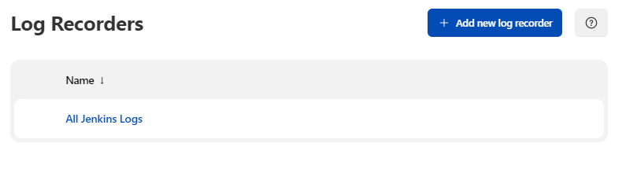
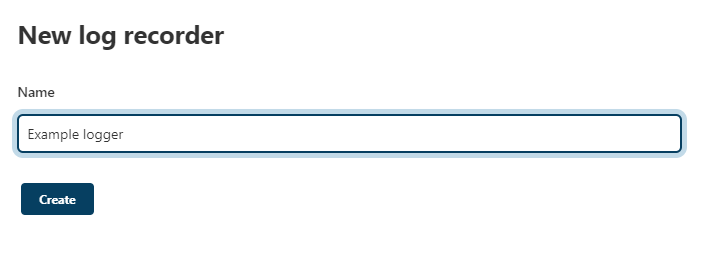
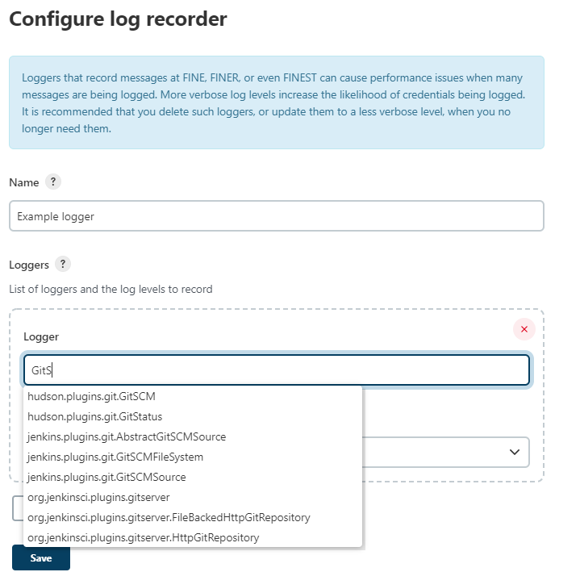

[Service]
Environment="JENKINS_LOG=%L/jenkins/jenkins.log"Viewing logs
Table of Contents
Logs on the system
When running jenkins.war manually with java -jar jenkins.war,
all logging information by default is output to standard out. Many
Jenkins native packages modify this behavior to ensure logging
information is output in a more conventional location for the platform.
Linux
By default logs can be viewed by running journalctl -u jenkins.service.
To customize the log location,
run systemctl edit jenkins and add the following:
Windows
By default logs should be at %JENKINS_HOME%/jenkins.out and
%JENKINS_HOME%/jenkins.err, unless customized in
%JENKINS_HOME%/jenkins.xml
Logs in Jenkins
Jenkins uses java.util.logging for logging. The java.util.logging system by
default sends every log above INFO to stdout.
Jenkins is equipped with a GUI for configuring/collecting/reporting log records of your choosing. This page shows you how to do this.
First, select the "System Log" from the "Manage Jenkins" page:

From there, you can create a custom log recorder, which helps you group relevant logs together while filtering out the noise.

Choose a name that makes sense to you.

You’ll be then asked to configure loggers and their levels whose output you’d like to collect. Depending on which part of Jenkins you monitor, you’ll need to specify different loggers. Tell us the symptom of your problem in the users list and we should be able to tell you where you need to look. Also, this is really just a wrapper around the java.util.logging package, so if you program in Java, you might be able to guess where to look.

Once the set up is complete, Jenkins will start collecting data. The collected logs are available from the web UI.
Making custom logs available outside of the web UI
The simplest solution is to install the Support Core Plugin, which causes custom logs to be written to disk automatically.
Debug logging in Jenkins
-
Create a file
logging.properties -
Define the logging levels and a
ConsoleHandler -
Pass this file to the JVM by adding the system property
-Djava.util.logging.config.file=<pathTo>/logging.properties.
An example logging.properties is included below. Note that for a normal production environment the default level is INFO, it is not advised to have debug log in production.
handlers = java.util.logging.ConsoleHandler
# see https://docs.oracle.com/en/java/javase/11/docs/api/java.logging/java/util/logging/SimpleFormatter.html
java.util.logging.SimpleFormatter.format = [%1$tF %1$tT][%4$-6s][%2$s] %5$s %6$s %n
# Keep this level to ALL or FINEST or it will be filtered before applying other levels
java.util.logging.ConsoleHandler.level = ALL
# Default level
.level= INFO
# High verbosity for a dedicated package com.myplugin.*
com.myplugin.level = ALLPlease submit your feedback about this page through this quick form.
Alternatively, if you don't wish to complete the quick form, you can simply indicate if you found this page helpful?
See existing feedback here.